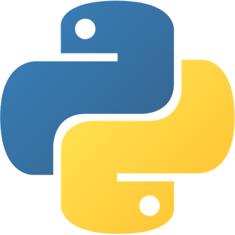
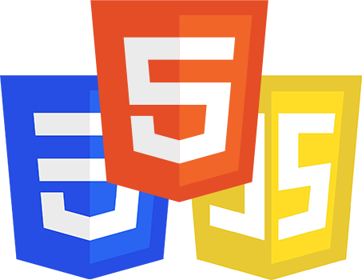
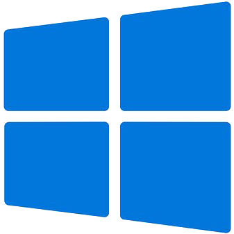
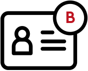
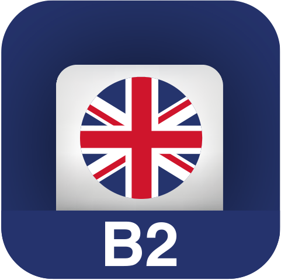
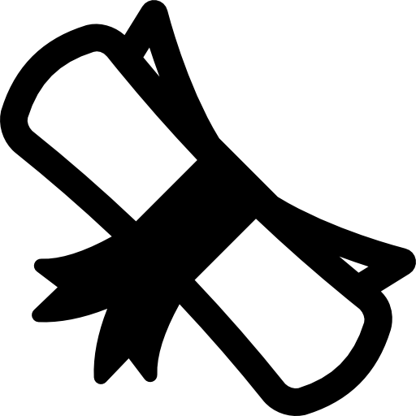

Paul Bukowski
Lycéen en Terminale Générale et bientôt étudiant, aspirant à devenir ingénieur logiciel.
Passionné de Mathématiques et d'Informatique depuis toujours, j'espère un jour en faire mon métier.
Passionné de Mathématiques et d'Informatique depuis toujours, j'espère un jour en faire mon métier.
J'ai toujours eu une attirance pour les mathématiques et les matières scientifiques en général. C'est pourquoi j'ai choisi, au lycée, les spécialités Mathématiques, Physique-Chimie et NSI ainsi que l'option Maths Expertes en Terminale.
Ma passion pour les Mathématique m'a permis de me classer 7e/1338 de l'académie de Nantes aux Olympiades nationales de Mathématiques et de participer au Concours Général des Lycées de Mathématiques.
J'ai, par ailleurs, intégré la Section Européenne au collège puis au lycée avec laquelle j'ai fait un voyage à Bath en 1ère. Cela m'a permis, pendant ces 6 ans, d'améliorer considérablement mon niveau d'expression et de compréhension en anglais.







Dès l'école primaire, j'ai découvert la programmation avec Thymio, un robot éducatif programmable avec une série de conditions logiques. Depuis lors, je me suis passionné pour la programmation et j'ai continué d'apprendre.
En entrant au collège j'ai découvert Scratch, avec lequel j'ai créé plusieurs petits jeux pour moi et mes amis. Enfin, en entrant au lycée, j'ai appris Python, avec lequel j'ai beaucoup expérimenté sur mon temps personnel.
Avec les cours de NSI en 1ère, j'ai découvert de nombreuses notions que j'ai approfondies par moi-même en dehors des cours. J'ai ainsi appris beaucoup en algorithmie, structures de données, protocoles de communications, le web et API.
J'ai mené de mon côté plusieurs projets personnels qui m'ont permis d'apprendre HTML/CSS plus profondément et le langage de programmation Rust pour les nombreuses possibilités qu'il offre face à Python. Cela m'a aussi permis d'expérimenter Linux et la ligne de commande.
Depuis petit, j'ai toujours passé une grande partie de mon temps dans l'eau. J'ai commencé la natation à 6 ans (et je continue), j'ai fait du snorkeling en mer (palme, masque et tuba) et à 8 ans j'ai fait mon baptême de plongée.
J'ai le niveau 2 de la Fédération française de plongée ce qui me permet de plonger encadré jusqu'à 40 mètres de profondeur.
En 2021, j'ai rejoint le PHOC, un club de plongée où je nage chaque semaine. J'ai obtenu mon niveau 2 ainsi que le RIFAP dans ce club, et j'y prépare actuellement le niveau 3 afin de plonger jusqu'à 60 mètres.
J'ai, depuis que j'ai commencé, comptabilisé plus d'une centaine de plongées dans plusieurs environnements différents : dans le Golfe du Morbihan, en Mer Méditerranée (Sud de la France et Nord de l'Espagne), en Mer Rouge (Égypte) et à Bali.
Lors de mon premier voyage en Égypte, en 2022, j'ai découvert la photographie sous-marine avec un ancien appareil de mon père que j'emmène depuis avec moi dans toutes mes plongées.